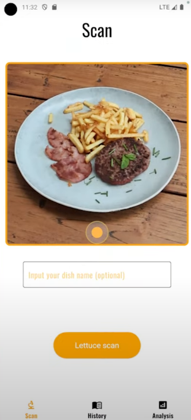
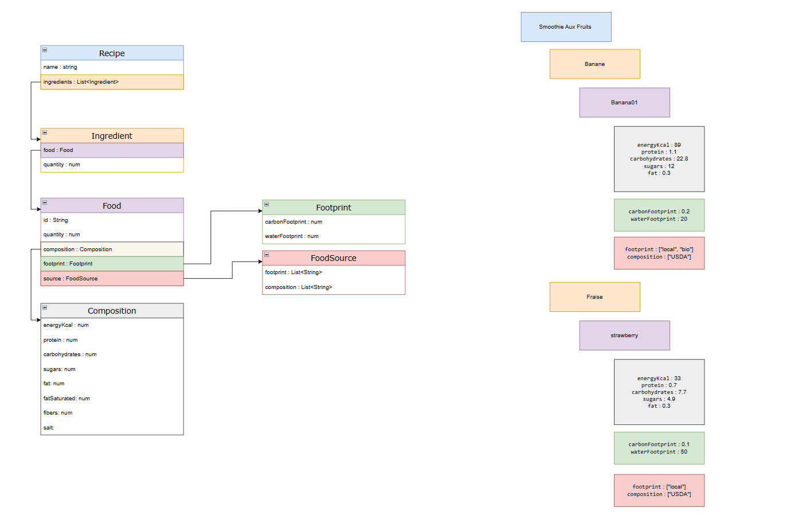
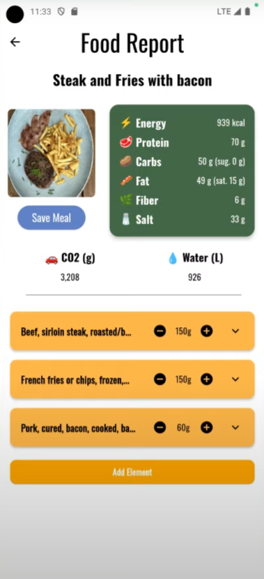

Agrum AI : Picture your diet
Résumé du projet
Agrum.ai est une application mobile innovante qui révolutionne votre manière de consommer en vous offrant une analyse détaillée de vos plats. Grâce à l’IA, l’application décompose chaque recette en ingrédients, quantifie leurs volumes et évalue leur apport nutritionnel. Agrum.ai ne se contente pas de décrypter vos repas : elle vous propose également des suggestions de plats équilibrés pour adopter une alimentation saine au quotidien.

Structure de la solution
Fonctionnalités principales
- Analyse visuelle : Scanner les plats pour en extraire instantanément les ingrédients.
- Évaluation nutritionnelle : Fournir un bilan complet des nutriments (calories, protéines, lipides, etc.).
- Suggestions personnalisées : Proposer des recettes et menus adaptés à vos besoins.
- Suivi alimentaire : Enregistrer et analyser l'évolution de votre alimentation.
- Interface intuitive : Offrir une expérience utilisateur fluide.
Technologies utilisées
- Python : Backend FastAPI pour la gestion des requêtes.
- OpenAI API : Analyse et enrichissement des données.
- GCP : Déploiement du backend.
- Docker : Conteneurisation pour une mise en production rapide.
- Android Studio : Émulation pour la version mobile.
Points forts du projet
- Technologie de pointe : Analyse précise et rapide grâce à l’IA.
- Personnalisation avancée : Recommandations sur-mesure selon vos besoins diététiques.
- Valorisation de la santé : Outil complet pour comprendre et améliorer votre alimentation.
Liens associés
Galerie


